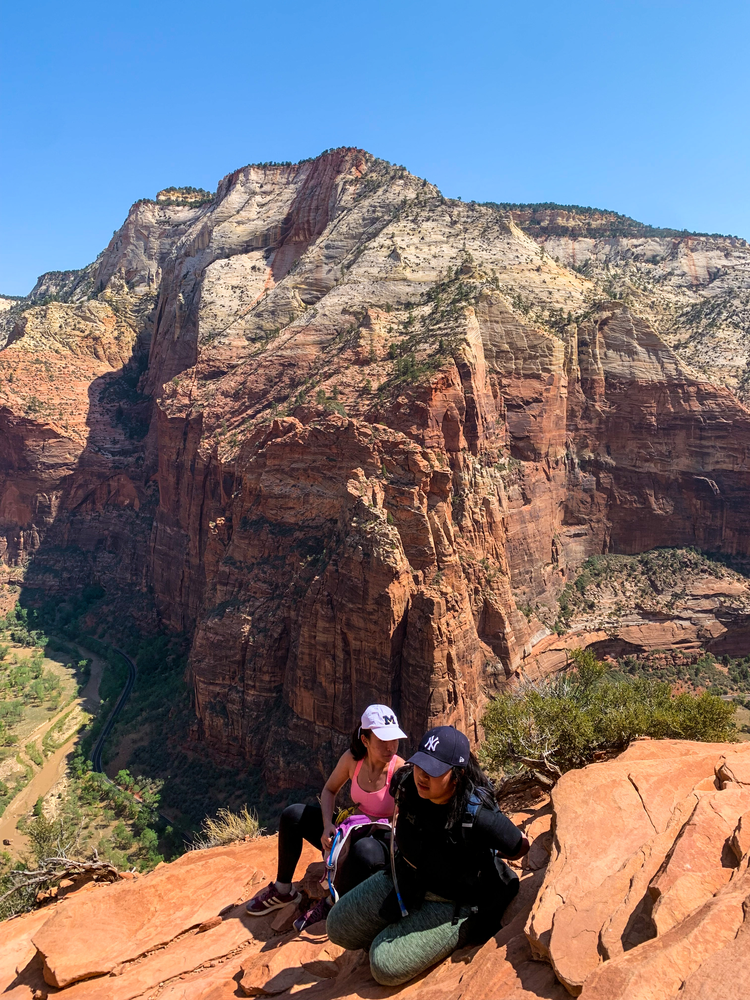
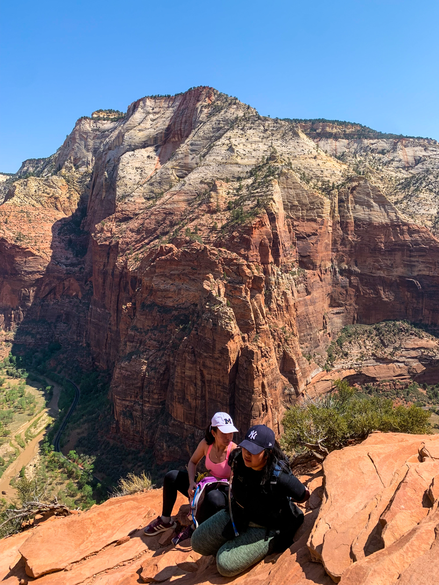

Out of the many national parks I have visited in the past, Utah still has a very special place in my heart. In the summer of 2021, my friends and I decided that we have put Utah off for way too long.
Utah is a state in the Mountain West subregion of the Western United States. It is home to five stunning national parks, also known as the "Mighty 5". They are: Zion National Park, Bryce Canyon National Park, Arches National Park, Canyonlands and Capitol Reefs.
1. Zion National Park
The Narrows
A slot canyon through some of the most breath-taking rock forms in Southwest America.
You may ask: "What's so incredible about this river?" For over 18 million years, the Virgin River has been carving a slot within the canyon - a process that continues till this day - now allowing hikers to hike within the ~16 feet wide and 1,000 feet up channel.
How to get there?
The more popular option is to do the bottoom-up hike (no permit required). To get to the trailhead, take a shuttle to the Temple of Sinawava (Stop 9). Walk along the Riverside walk, it takes you straight to the trailhead.
Things to note before hiking the narrows:
- Wear the right attire. We rented boots and a stick from Zion Outfitters.
- Bring a waterproof bag to keep your essentials!
- Keep an eye out for flash flood warnings.


Angel's Landing
Angel's Landing is one of the most popular destinations in Zion National Park. The stunning views of Zion Canyon's 270-million-year-old rock layers will time travel you back to the Triassic period when this section of the Colorado Plateau was just a flat basin at sea level.
In response to concerns about crowding and congestion on the trail, on and after April 1, 2022, everyone who hikes Angels Landing needs to have a permit.
We left for Angel's Landing at about 8am and started hiking around 9am. It took us about 5.5 hours (including an hour lunch break) to complete the entire trail. Talk about endurance!
How to get there?
Take a shuttle to the Grotto Trailhead (Stop 6).
Things to note before hiking the narrows:
- Bring lots of water! I recommend having 1 gallon per person.
- Bring sunglasses or a cap. The sun gets very intense at noon.
- Prepare lunch as energy boosters for your hike.
 
